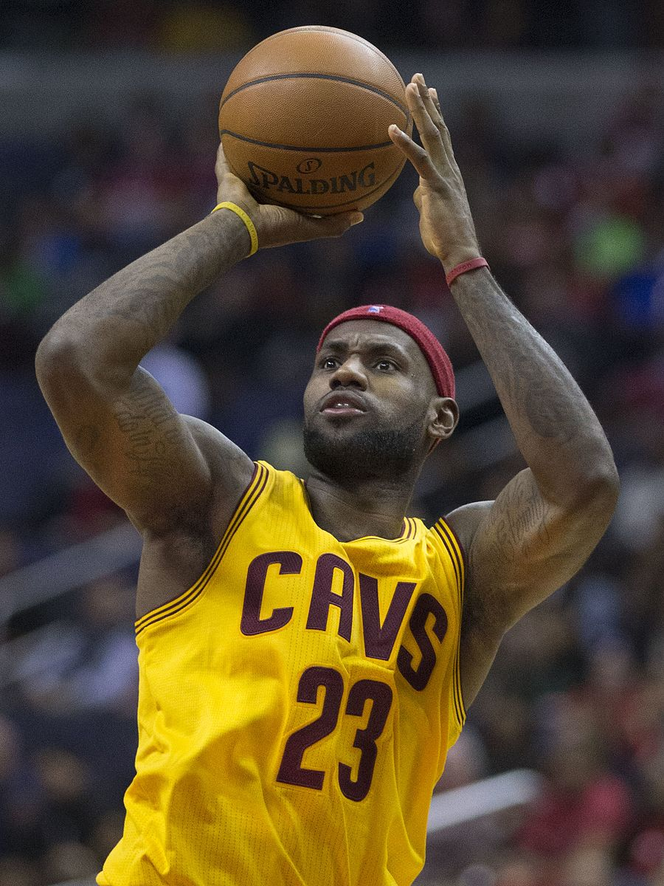

Desde temprana edad, LeBron mostró un gran instinto para el baloncesto. Pasaba mucho tiempo jugando con un aro y un balón que su madre Gloria le regaló. También gozaba de muy buena genética, y pese a que su madre solo medía 1,65 metros de estatura, tenía parientes que eran mucho más altos.
La vida de nómada que había llevado junto a su madre impidió que LeBron pudiera tener amigos. Cuando entró al colegio le costaba hacer amigos con facilidad, ya que se sentía avergonzado de la vida familiar que había llevado. Empezó a encontrar en el baloncesto y en el fútbol americano un desahogo para mostrar sus emociones.
LeBron era un excelente atleta, rápido y fuerte por naturaleza. Comenzaba a tener futuro tanto en el baloncesto como en el fútbol americano. En la cancha de baloncesto su reflejo era Michael Jordan; podía convertirse en su gran sucesor, aunque Penny Hardaway y Jason Kidd también fueron dos de sus jugadores favoritos. En el fútbol, LeBron jugaba de receptor. Firmó 19 touchdowns en seis partidos en su primer año de Pee Wee (categoría por edad en fútbol americano). Su entrenador fue Frankie Walker, uno de los hombres que más influencia han tenido en la vida de James. A final de temporada, Walker se dio cuenta de que LeBron estaba descuidando el colegio, y su formación académica era para Walker muy importante. Recomendó a Gloria que el chico necesitaba un ambiente más estable. Ambos acordaron que LeBron se mudara con Walker y su familia. Allí convivió con el propio Frank, su mujer Pam, y sus tres hijos, Chanelle, Frankie Jr. y Tanesha. LeBron comenzó a tomarse en serio el colegio y su asistencia fue premiada por la escuela. La convivencia con esta familia fue fundamental en la transición de James de niño a adolescente. El día que cambió la vida de LeBron James para siempre fue en el otoño de 1994. Aquella tarde, Frank Walker puso una pelota de baloncesto en las manos del niño que en ese momento tenía 9 años de edad. Walker pasó mucho tiempo enseñándole al joven sobre este deporte en los siguientes tres años.
Después de 18 meses separados, Gloria se llevó a James de regreso con ella. Pero cuando volvieron los problemas económicos, regresó con la familia Walker, que ayudaban a Gloria a pagar el alquiler. Walker y su esposa querían asegurarse de que James siempre tuviera un lugar en Akron que pudiera llamar casa.
Familia:
Cuando LeBron nació, su madre, Gloria James, tan solo tenía 16 años y su padre biológico, Anthony McClelland, exconvicto, se desentendió de su hijo desde su nacimiento. Gloria lo sacó adelante sola y sin ayuda, situación agravada por la muerte de su madre cuando LeBron apenas era un bebé. Esta circunstancia acentuó las dificultades de una familia que vivió en una constante lucha por mantenerse. Gloria no encontraba trabajo fijo y ambos pasaban de piso en piso continuamente, y se conocieron todos los barrios marginales de Akron, una ciudad de más de 200.000 habitantes, situada a menos de una hora al sur de Cleveland.
A pesar de las circunstancias, Gloria trabajó duro para ser una buena madre y proteger a su hijo LeBron de la pobreza y la violencia de las calles. Sin embargo esto no fue tarea fácil. Cuando LeBron tenía dos años y Gloria empezó a salir con Eddie Jackson, comenzaron los problemas. En 1990, Eddie fue a prisión por tráfico de cocaína. No obstante, LeBron estableció vínculos con Jackson, y a Gloria le gustaba que su hijo pudiera ver en él una figura paterna. Sus hermanos, Terry y Curt, también ayudaron en situaciones difíciles.

Su carrera en la NBA:
Firmó un contrato de 90 millones de dólares con Nike antes de debutar en la NBA. Con 18 años, James fue elegido en la primera posición del Draft de la NBA de 2003 por Cleveland Cavaliers. Con los Cavs ratificó el prometedor futuro que se labró durante su estancia en el instituto, y en su primera temporada se llevó el premio al Rookie del Año de la NBA. Desde que llegó a la liga, LeBron ha registrado muchos récords de precocidad, entre ellos, el del jugador más joven en alcanzar los 10 000, 15 000, 20 000, 25 000, 30 000 y 35 000 puntos.
Desde 2005 ha sido All-Star (del que resultó tres veces MVP) y ha formado parte de los Mejores Quintetos de la NBA, siendo elegido en trece ocasiones en el Primer Quinteto. En la 2006, James terminó segundo en la votación del MVP de la NBA 2005-06. Su premio individual más importante llegó el 4 de mayo de 2009, al ser nombrado MVP de la temporada 2008-09, galardón que ganaría también en las temporadas 2009-10, 2011-12 y 2012-13. En 2012, 2013, 2016 y 2020 fue campeón de la NBA y MVP de las Finales.
James, popularmente conocido como "The King", "King James" y "The Chosen One", lideró a los Cavaliers a sus primeras Finales de la NBA en 2007, donde cayeron ante San Antonio Spurs. Desde los Playoffs de 2006, Cleveland estuvo siempre presente en la fase final de la NBA hasta su salida de la franquicia en 2010. Desde su regreso, en 2014, los Cavs disputaron cuatro Finales de la NBA consecutivas, donde conquistaron su primer título como franquicia en 2016.
Con la selección de baloncesto de Estados Unidos ha conseguido dos oros olímpicos en Pekín 2008 y Londres 2012 (teniendo como rival en ambas finales a la selección española) y un bronce en Atenas 2004, además de la medalla de bronce en el Campeonato Mundial de Baloncesto de 2006 en Japón.